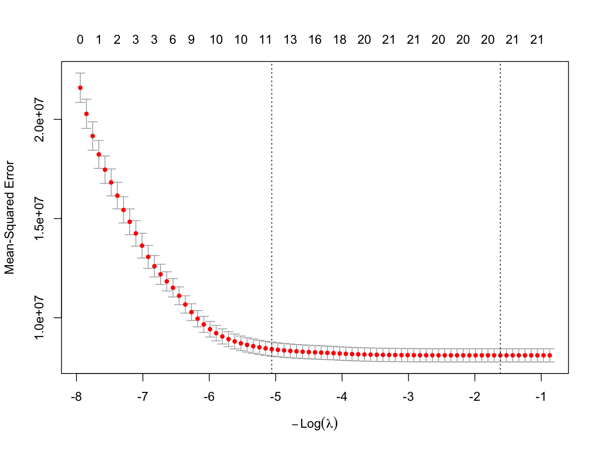
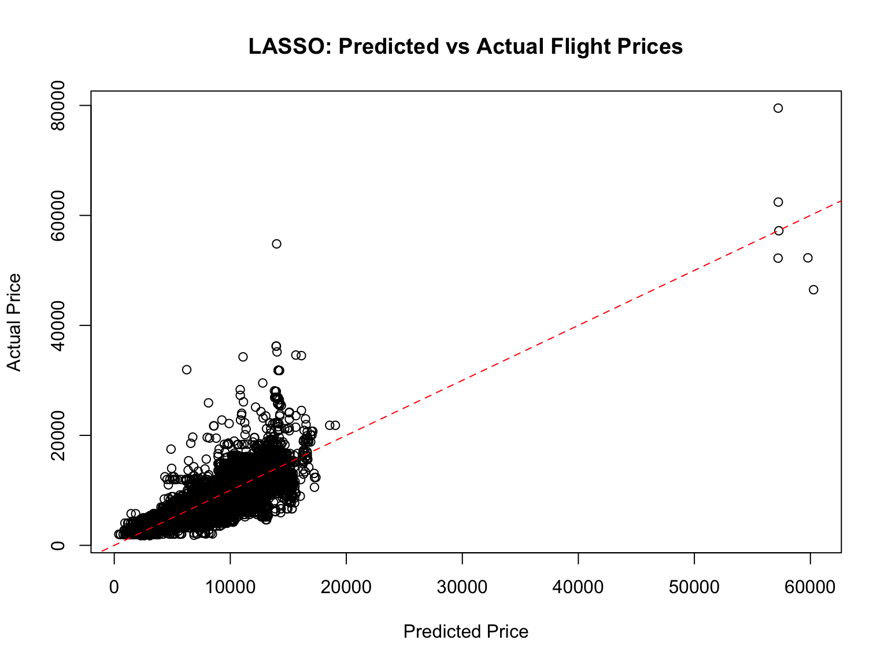
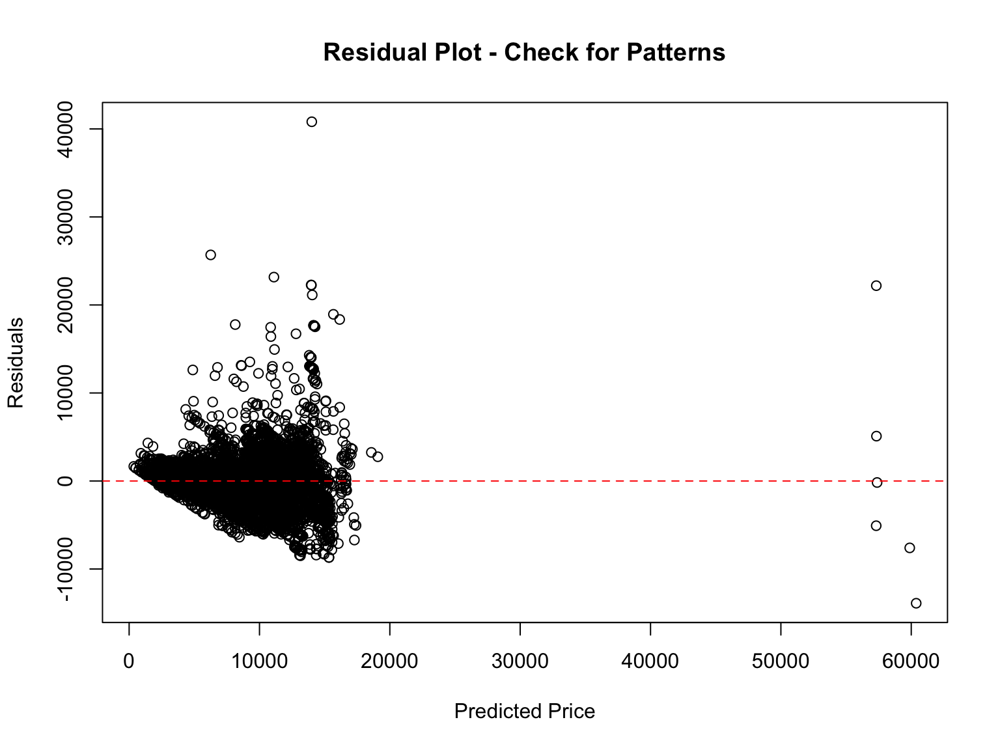

# Data Manipulation
library(tidyverse) # Basic data manipulation function
library(janitor) # Advanced data manipulation function
# Graphing and Analysis
library(glmnet)
# Quarto
library(kableExtra)LASSO Regressions Quarto
Packages
Data
glimpse(flight_data8)Rows: 8,477
Columns: 10
$ Airline <chr> "IndiGo", "IndiGo", "SpiceJet", "Jet Airways", …
$ number_of_stops <dbl> 1, 1, 0, 1, 1, 1, 1, 0, 0, 2, 1, 1, 2, 1, 1, 0,…
$ airport_code_departure <chr> "CCU", "BLR", "CCU", "BLR", "BLR", "DEL", "DEL"…
$ airport_code_arrival <chr> "BLR", "DEL", "BLR", "DEL", "DEL", "COK", "COK"…
$ Departure_Day <dbl> 12, 1, 24, 12, 1, 27, 1, 18, 24, 3, 15, 12, 12,…
$ Departure_Month <dbl> 5, 3, 6, 3, 3, 5, 6, 4, 6, 3, 4, 6, 6, 5, 3, 4,…
$ Departure_Hour <dbl> 18, 16, 9, 18, 8, 11, 9, 20, 11, 16, 8, 14, 20,…
$ Duration_Hours <dbl> 5.416667, 4.750000, 2.416667, 15.500000, 21.083…
$ weekend <chr> "Weekend", "Weekday", "Weekday", "Weekday", "We…
$ Price <dbl> 6218, 13302, 3873, 11087, 22270, 8625, 8907, 41…Regressions
Linear Regression
regression.flight <- lm(Price ~ Departure_Day + Departure_Month + Departure_Hour + Duration_Hours +
number_of_stops + weekend +
Airline + airport_code_departure + airport_code_arrival,
data = flight_data8)
Call:
lm(formula = Price ~ Departure_Day + Departure_Month + Departure_Hour +
Duration_Hours + number_of_stops + weekend + Airline + airport_code_departure +
airport_code_arrival, data = flight_data8)
Residuals:
Min 1Q Median 3Q Max
-13988 -1507 -201 1337 40797
Coefficients: (4 not defined because of singularities)
Estimate Std. Error t value Pr(>|t|)
(Intercept) 8208.221 241.435 33.998 < 2e-16 ***
Departure_Day -80.319 3.702 -21.699 < 2e-16 ***
Departure_Month -635.555 27.757 -22.897 < 2e-16 ***
Departure_Hour 18.969 5.547 3.420 0.000630 ***
Duration_Hours 11.507 5.903 1.949 0.051293 .
number_of_stops 3010.817 80.711 37.304 < 2e-16 ***
weekendWeekend 260.809 68.045 3.833 0.000128 ***
AirlineAir India 1587.642 202.108 7.855 4.47e-15 ***
AirlineGoAir -47.842 290.473 -0.165 0.869182
AirlineIndiGo 293.817 193.687 1.517 0.129312
AirlineJet Airways 4422.949 191.127 23.141 < 2e-16 ***
AirlineJet Airways Business 48015.158 1176.098 40.826 < 2e-16 ***
AirlineMultiple carriers 3778.746 208.811 18.096 < 2e-16 ***
AirlineMultiple carriers Premium economy 3956.566 878.159 4.506 6.71e-06 ***
AirlineSpiceJet -244.574 213.326 -1.146 0.251629
AirlineTrujet -3206.122 2846.401 -1.126 0.260038
AirlineVistara 2000.639 233.336 8.574 < 2e-16 ***
AirlineVistara Premium economy 2710.605 2015.204 1.345 0.178636
airport_code_departureBOM -1768.329 139.967 -12.634 < 2e-16 ***
airport_code_departureCCU -356.941 101.396 -3.520 0.000433 ***
airport_code_departureDEL -355.210 109.994 -3.229 0.001245 **
airport_code_departureMAA 11.020 183.499 0.060 0.952113
airport_code_arrivalCCU NA NA NA NA
airport_code_arrivalCOK NA NA NA NA
airport_code_arrivalDEL NA NA NA NA
airport_code_arrivalHYD NA NA NA NA
---
Signif. codes: 0 '***' 0.001 '**' 0.01 '*' 0.05 '.' 0.1 ' ' 1
Residual standard error: 2836 on 8455 degrees of freedom
Multiple R-squared: 0.6289, Adjusted R-squared: 0.6279
F-statistic: 682.2 on 21 and 8455 DF, p-value: < 2.2e-16LASSO Technique
Background
LASSO is a regularization technique that extends ordinary least squares regression by adding a penalty term to prevent overfitting and perform automatic feature selection. Here’s how it works:
The Core Mechanism
In regular linear regression, we minimize the sum of squared errors. LASSO adds an L1 penalty term:
LASSO objective function: Minimize [RSS + λ∑|βⱼ|]
Where λ (lambda) is the regularization parameter (or hyperparameter) that controls the strength of the penalty. The key insight is that the L1 penalty (absolute values of coefficients) forces some coefficients to exactly zero, effectively removing those features from the model.
Why Data Scientists Love LASSO
Automatic Feature Selection: Unlike traditional stepwise regression you might be familiar with, LASSO simultaneously fits the model and selects features. This is crucial in high-dimensional data where you might have hundreds or thousands of features.
Handles Multicollinearity: When features are highly correlated, LASSO tends to pick one from a group and zero out the others, creating a more interpretable model.
Prevents Overfitting: The regularization shrinks coefficients toward zero, reducing model complexity.
Practical Implementation
The λ parameter is typically chosen through cross-validation - you’d fit LASSO models across a range of λ values and select the one that minimizes prediction error on held-out data. This process is called hyperparameter tuning.
In your education research context, imagine predicting student outcomes using dozens of demographic, behavioral, and academic features. LASSO would help you identify which features actually matter while creating a model that generalizes well to new students.
Modeling
Prepare your feature matrix - glmnet requires matrix format
X <- model.matrix(Price ~ Departure_Day + Departure_Month + Departure_Hour + Duration_Hours + number_of_stops +
weekend +
Airline + airport_code_arrival - 1,
data = flight_data8)Extract target variable
y <- flight_data8$PriceFit LASSO regression across lambda values
lasso_flight <- glmnet(X, y, alpha = 1)Use cross-validation to find optimal lambda
cv_lasso_flight <- cv.glmnet(X, y, alpha = 1, nfolds = 10)Plot cross-validation results
Reading Your CV Plot
The two vertical dashed lines are crucial:
Left line (lambda.min): The λ value that minimizes cross-validation error - gives you the best predictive performance
Right line (lambda.1se): A more conservative choice - the largest λ within one standard error of the minimum. This is the “one standard error rule”
The numbers at the top (0, 1, 2, 3, etc.) show how many features remain in the model at each λ value. Notice how:
Far left: All ~21 features are included (minimal regularization)
Far right: Only a few features survive the heavy regularization
Your optimal models (between the lines) use roughly 15-21 features
Key Takeaway for Your Flight Price Model
Your CV curve shows a classic pattern - error decreases as you add regularization (moving right), reaches a minimum, then starts increasing again as you over-regularize. The relatively flat bottom suggests your model is robust across a range of λ values.
plot(cv_lasso_flight)
Extract optimal lambda values
lambda_min <- cv_lasso_flight$lambda.min
lambda_1se <- cv_lasso_flight$lambda.1se Fit final model with optimal lambda
final_flight_model <- glmnet(X, y, alpha = 1, lambda = lambda_min)View selected features (non-zero coefficients)
LASSO Results Analysis Your model selected 20 meaningful features out of the original set:
Most important price drivers:
Jet Airways Business (+47,520!) and number of stops (+3,007)
Seasonal effects: Departure month (-632) suggests cheaper flights later in year
Carrier effects: Clear premium hierarchy (Jet Airways Business >> Vistara >> Air India >> budget carriers)
Route effects: HYD arrival is cheaper (-1,391) than CCU/DEL
| Feature | Coefficient |
|---|---|
| (Intercept) | 8382.06 |
| Departure_Day: | -79.85 |
| Departure_Month: | -632.40 |
| Departure_Hour: | 17.47 |
| Duration_Hours: | 11.70 |
| number_of_stops: | 3008.69 |
| weekendWeekday: | -248.88 |
| weekendWeekend: | 0.00 |
| AirlineAir: India | 1296.77 |
| AirlineGoAir: | -285.24 |
| AirlineIndiGo: | 7.05 |
| AirlineJet: Airways | 4138.42 |
| AirlineJet: Airways Business | 47564.74 |
| AirlineMultiple: carriers | 3481.17 |
| AirlineMultiple: carriers Premium economy | 3527.75 |
| AirlineSpiceJet: | -503.49 |
| AirlineTrujet: | -3034.78 |
| AirlineVistara: | 1706.19 |
| AirlineVistara: Premium economy | 2136.62 |
| airport_code_arrivalCCU: | 338.28 |
| airport_code_arrivalDEL: | 339.34 |
| airport_code_arrivalHYD: | -1392.94 |
Compare number of features: original vs LASSO-selected
Original model features: 22 LASSO selected features: 21 Model Performance Metrics
Essential Performance Metrics
Make predictions on your data
lasso_predictions <- predict(final_flight_model, newx = X)Calculate core regression metrics
rmse_lasso <- sqrt(mean((y - lasso_predictions)^2))
mae_lasso <- mean(abs(y - lasso_predictions))
r_squared_lasso <- cor(y, lasso_predictions)^2Results
LASSO Performance Metrics:RMSE (Root Mean Squared Error): 2833.2 MAE (Mean Absolute Error): 1973.27 R-squared: 0.6287 Mean flight price: 9099.84 RMSE as % of mean price: 31.1 %Cross-Validation Performance
Get CV performance at optimal lambda
cv_rmse <- sqrt(cv_lasso_flight$cvm[cv_lasso_flight$lambda == lambda_min])
cv_rmse_1se <- sqrt(cv_lasso_flight$cvm[cv_lasso_flight$lambda == lambda_1se])
Cross-Validation Performance:CV RMSE at lambda.min: 2846.66 CV RMSE at lambda.1se: 2901.04 Baseline Comparison
Simple baseline: predict mean price for everything
baseline_rmse <- sqrt(mean((y - mean(y))^2))Improvement over baseline
improvement <- (baseline_rmse - rmse_lasso) / baseline_rmse * 100
Model Comparison:Baseline RMSE (predicting mean): 4649.78 LASSO improvement over baseline: 39.1 %Prediction Quality Insights
Look at prediction vs actual scatter
plot(lasso_predictions, y,
xlab = "Predicted Price", ylab = "Actual Price",
main = "LASSO: Predicted vs Actual Flight Prices")
abline(0, 1, col = "red", lty = 2) # Perfect prediction line
Residual Analysis
residuals <- y - lasso_predictions
plot(lasso_predictions, residuals,
xlab = "Predicted Price", ylab = "Residuals",
main = "Residual Plot - Check for Patterns")
abline(h = 0, col = "red", lty = 2)
Summary of Model Performance
Strong Overall Performance:
RMSE: ₹2,833 - Typical prediction error is about ₹2,833, which is quite reasonable for flight prices
31.1% RMSE relative to mean price - This is actually good performance for pricing models, especially in a volatile market like flights
39.1% improvement over baseline - This is substantial! Capturing real economic patterns, not just noise
Cross-Validation Results (The Gold Standard)
CV RMSE of ₹2,851 is very close to your training RMSE (₹2,833), which indicates:
No overfitting - Critical for deployment to new data
Robust model - Performance will generalize well
Proper regularization - LASSO successfully balanced bias-variance tradeoff
Visual Diagnostics Look Great
Predicted vs Actual plot: Shows good heteroscedasticity (spread increases with price) - this is normal for pricing data where expensive items have more variation.
Residual plot: The random scatter around zero with no clear patterns suggests your model has captured the main relationships. A few outliers in the high-price range are expected (probably those Jet Airways Business class flights).
Data Science Perspective
Your R² of 0.63 might seem moderate compared to controlled experiments, but for real-world pricing prediction with many unobserved factors (seat availability, competitor pricing, demand), this represents solid predictive power.
Model Deployment Readiness
The close agreement between training and CV performance suggests this model would perform well in production for flight price estimation. The key business insight - that airline type and number of stops are the strongest price drivers - aligns with industry knowledge.